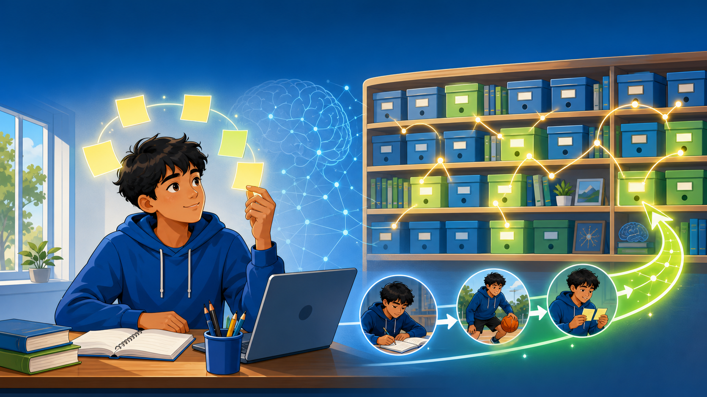
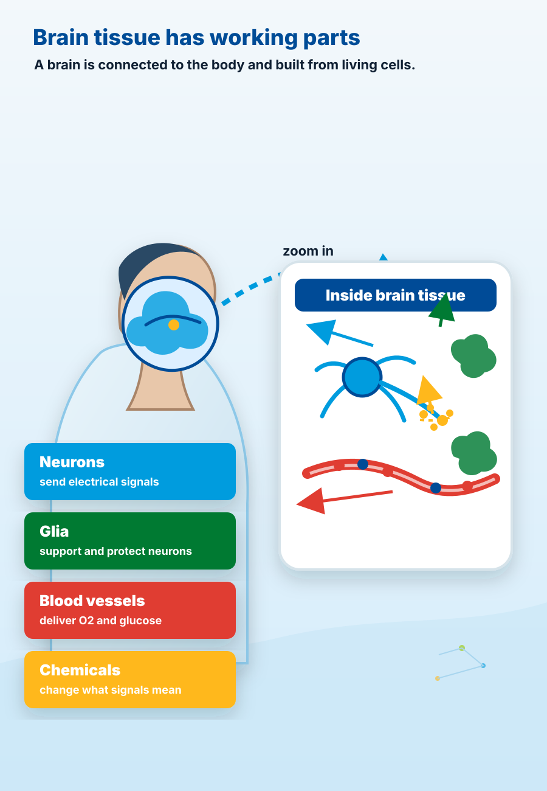

Brain Code
What did your brain already do today?
Start with everyday life, then translate it into neuroscience.
Four things your brain does every day
Pick one task. What information did your brain use?
Recognizing a friend
eyes -> attention -> memory -> action
Real life
Your brain can recognize a friend in a flash.
Look for the loop
Brain tasks often work as loops.
Input
Brain processing
Action
Feedback
In code, this can become a model: input, rule, output.
Small math idea
Information is a signal that can change what you do.
Reading a plot is reading a story.
The x-axis is time.
The line shows a changing signal.
The peak is the moment the signal matters most.
Memory has different jobs
Holding, storing, and retrieving are different jobs.

Working memory and long-term memory work together.
WM: A cue brings information into the active workspace.
LM: Stored knowledge can be retrieved and used again.
LM storage: Neurons change synapse strengths, making useful pathways easier to reuse.

What is in the brain?
The brain is living tissue, not just an idea machine.
Your brain uses areas and networks.
Frontal areas: plan and choose
Sensory: sight, sound, touch
Motor areas: movement commands
Hippocampus: memory
Cerebellum: timing and coordination
Movement uses brain code
Catching a ball is a fast control loop.
Brains need fuel
Thinking and learning use energy.
Why might focus feel harder when you are tired or hungry?
Practice is repeating with feedback.
Prediction: what do I think will happen?
Feedback: what actually happened?
Update: what should change next time?
Your turn
Map one daily task onto the brain loop.
Input
Memory
Action
Feedback
Energy
Next: cognition in daily life.